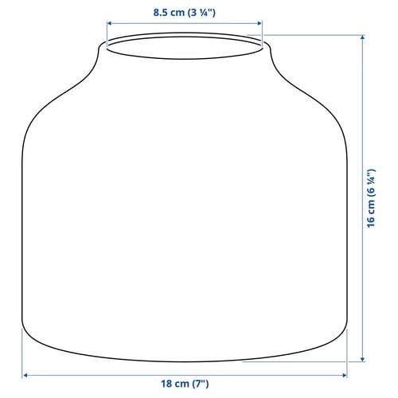

- Vista general
- Detalles del producto
- Medidas
Un estilo cálido y apacible con un acabado mate. Este jarrón de gres presenta lunares pintados a mano que le dan un estilo único con textura. La amplia apertura permite distribuir las flores para dejarlas de la forma más bonita.
Los sutiles lunares pintados a mano hacen que cada jarrón sea único y le aportan textura y sensación de calidad. Puedes usarlo para unas elegantes rosas o un ramo más sencillo, o como adorno en cualquier parte de la casa.

Medidas
diámetro 18 cm Altura 16 cm
Embalaje
906.072.971 × BLODBJÖRK Florero / jarrón 906.072.97 Largo: 16 cm Peso: 1.45 kg Diámetro: 18 cm